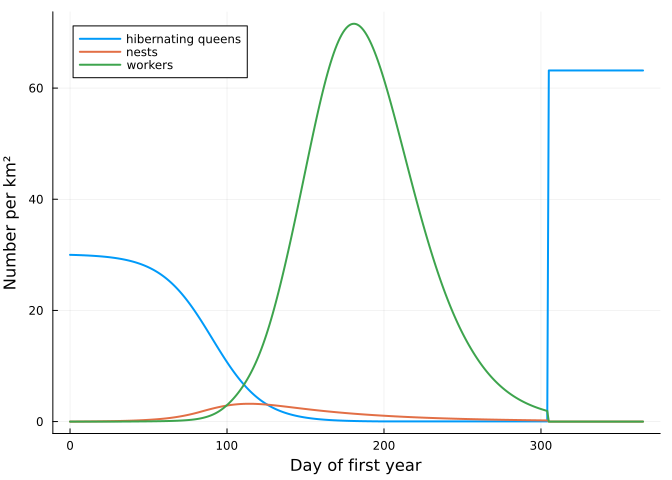
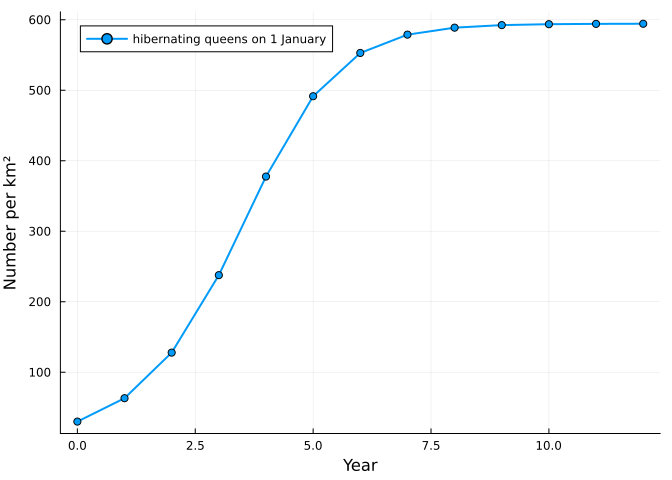

Bees 3: a bumblebee population
Simon Frost
ENV["GKSwstype"] = "100"
using MatrixCommunityModels
using PlotsBumblebees live differently from honey bees. A colony lasts one season: a queen who hibernated alone founds it in spring, it rears workers, then males and new queens, and then dies; only the new queens overwinter. What persists from year to year is the population of colonies, so that is what this model follows, in numbers per square kilometre.
Three modules
The life cycle is assembled from three nets that share a list of stages: what queens do, what the colony rears, and how long adults live.
p = BUMBLEBEE_PARAMETERS
stay = 1 - p.queen_mortality
stages = [:hibernating, :searching, :founding, :growing, :reproducing, :ending,
:worker_brood, :worker, :male_brood, :male, :gyne_brood, :new_queen]
queens = ValuedProjectionNet(stages,
:dormancy => [(:hibernating => :hibernating) => 1.0],
:waiting => [(:new_queen => :new_queen) => 1.0],
:overwintering => [(:new_queen => :hibernating) => 1.0],
:emergence => [(:hibernating => :searching) => p.winter_survival],
:searching => [(:searching => :searching) => 1 - p.nest_finding - p.search_mortality],
:nesting => [(:searching => :founding) => p.nest_finding],
:first_workers => [(:founding => :growing) => 1.0],
:colony_cycle => [(:growing => :growing) => stay * (1 - p.switch), (:growing => :reproducing) => stay * p.switch,
(:reproducing => :reproducing) => stay * (1 - p.ending), (:reproducing => :ending) => stay * p.ending,
(:ending => :ending) => stay])
rearing = ValuedProjectionNet(stages,
:first_brood => [(:founding => :worker) => p.first_workers],
:worker_eggs => [(:growing => :worker_brood) => p.eggs],
:sexual_eggs => [(:reproducing => :gyne_brood) => p.gyne_fraction * p.eggs,
(:reproducing => :male_brood) => (1 - p.gyne_fraction) * p.eggs],
:eclosion => [(:worker_brood => :worker) => p.brood_survival, (:male_brood => :male) => p.brood_survival,
(:gyne_brood => :new_queen) => p.brood_survival * p.gyne_survival])
adults = ValuedProjectionNet(stages,
:worker_life => [(:worker => :worker) => 1.0], :male_life => [(:male => :male) => 1 - p.male_mortality])
life = queens ⊕ rearing ⊕ adults
transition_names(life)14-element Vector{Symbol}:
:dormancy
:emergence
:colony_cycle
:male_life
:first_brood
:first_workers
:waiting
:worker_life
:nesting
:eclosion
:searching
:sexual_eggs
:worker_eggs
:overwinteringFounding a nest takes four weeks, and worker, male and gyne brood take 22, 26 and 30 days to develop:
daily = expand_stages(ResponsiveProjectionNet(life), :founding => 28, :worker_brood => 22, :male_brood => 26, :gyne_brood => 30)
length(stage_names(daily))114bumblebee() is this net with its responses:
| Transition | Response | Source |
|---|---|---|
emergence, dormancy | queens emerge around day 91 (SD 28) | Bumble-BEEHAVE |
nesting | only where a nest site is free | Knight et al. 2005 (about 30 nests per km²) |
worker_eggs, sexual_eggs | eggs per colony rise with workers per colony, to the power 0.54 | Cresswell 2017 |
| brood ageing | larvae are lost when pollen or nectar is short; gyne larvae first | Bumble-BEEHAVE (Liebig’s minimum) |
worker_life, founding | foragers die faster when nectar is hard to find | proposed |
waiting, overwintering | new queens stay dormant until day 305, then join the hibernating queens | Bumble-BEEHAVE |
| everything else | all bees not dormant die on day 305 | Bumble-BEEHAVE |
Colonies are pooled: a response sees the total number of workers and of colonies, so “workers per colony” is an average over colonies of different ages.
A season
bb = bumblebee()
sol = project(bb, honeybee_state(bb; queens = 30), 1:(365 * 3))
day = sol.t[1:366]
nests = stage_total(sol, :bumblebee, [:founding, :growing, :reproducing, :ending])
plot(day, [stage_total(sol, :bumblebee, :hibernating)[1:366] nests[1:366] stage_total(sol, :bumblebee, :worker)[1:366]];
label = ["hibernating queens" "nests" "workers"], xlabel = "Day of first year", ylabel = "Number per km²", lw = 2)
first_year = 1:365
total(stage) = sum(stage_total(sol, :bumblebee, stage)[first_year])
founded = total(:founding28)
(established = round(founded / 30; digits = 3),
workers_per_colony = round(total(:worker_brood22) / founded + p.first_workers; digits = 1),
gynes_per_colony = round(total(:gyne_brood30) / founded; digits = 1),
males_per_colony = round(total(:male_brood26) / founded; digits = 1))(established = 0.105, workers_per_colony = 82.1, gynes_per_colony = 22.3, males_per_colony = 27.8)Published values for Bombus terrestris: about 0.12 of hibernating queens establish a colony; a colony rears 76 to 86 workers, 19 to 25 new queens and 22 to 30 males (Becher et al. 2018, simulated and empirical). The egg-laying rate, the rate of switching to reproduction and the duration of the reproductive phase were set to land in those ranges.
Nest sites
With forage unlimited, the population grows until nest sites run out.
long = project(bb, honeybee_state(bb; queens = 30), 1:(365 * 12))
start_of_year = 365 .* (0:12) .+ 1
plot(0:12, stage_total(long, :bumblebee, :hibernating)[start_of_year]; marker = :circle, lw = 2,
label = "hibernating queens on 1 January", xlabel = "Year", ylabel = "Number per km²")
maximum(stage_total(long, :bumblebee, [:founding, :growing, :reproducing, :ending]))25.476473653391672Adding the virus: one more module
Bumblebees have no Varroa. They can pick DWV up at flowers that infected honey bees have visited, and the evidence on what it does to them is mixed (the next vignette). In the model, infection is a fourth module: one more stage and two transitions, merged in with ⊕.
sick = bumblebee(virus = true)
setdiff(stage_names(sick, :bumblebee), stage_names(bb, :bumblebee)),
setdiff(transition_names(system(sick)[:bumblebee]), transition_names(system(bb)[:bumblebee]))([:infected_worker], [:infected_life, :infection])Without honey bees there is no source of virus, so this population behaves exactly like the one above. The next vignette puts the two species on the same flowers.
What is provisional
Larval starvation rates, the extra sensitivity of gyne larvae, and the effect of nectar shortage on forager mortality are assumptions. Pooling colonies loses the large differences between colonies seen in the field (in Crone & Williams 2016 only about a quarter of colonies produced any queens). BUMBLEBEE_PARAMETERS and the comments in src/bees.jl list every value with its source.
References
Becher, M. A. et al. (2018). Bumble-BEEHAVE. Journal of Applied Ecology 55, 2790-2801. Cresswell, J. E. (2017). Ecological Entomology 42, 221-229. Crone, E. E. & Williams, N. M. (2016). Ecology Letters 19, 460-468. Banks, H. T. et al. (2017). Ecological Modelling 351, 14-23. Knight, M. E. et al. (2005). Molecular Ecology 14, 1811-1820.